02 — PORTFÓLIO MANOEDIT
Seu próximo visual
começa aqui.
Avatares, banners e thumbnails para Minecraft. Explore os trabalhos do ManoEdit.
ME✳
26 AVATARES12 BANNERS14 THUMBNAILS
01 — SUA CARA NO JOGO
Avatares personalizados.
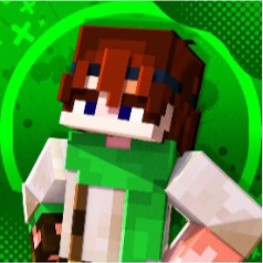
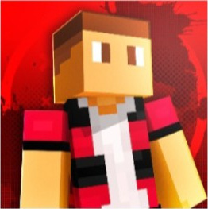
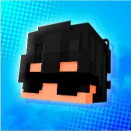
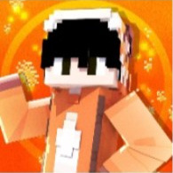
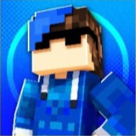
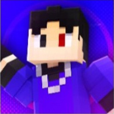
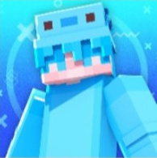
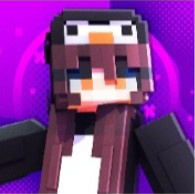
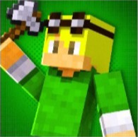
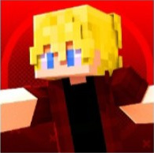
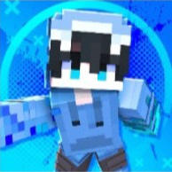
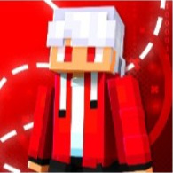
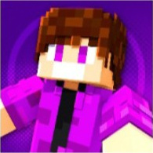
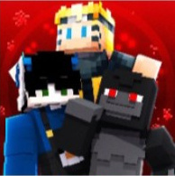
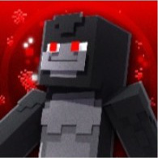
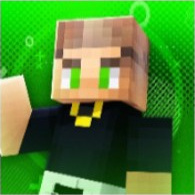
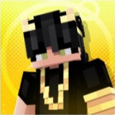
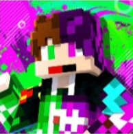
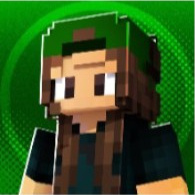
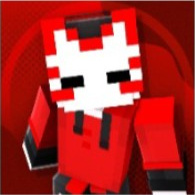
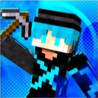
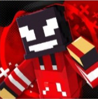
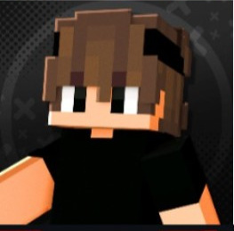
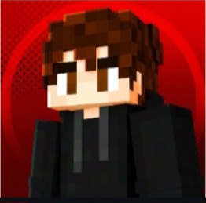
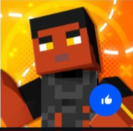
02 — IDENTIDADE PRO SEU CANAL
Banners que se destacam.
03 — UM BOM MOTIVO PRA DAR PLAY
Thumbnails de impacto.
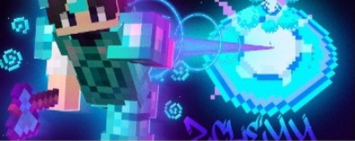
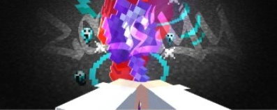
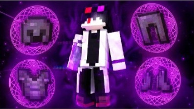
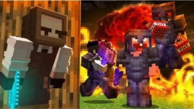
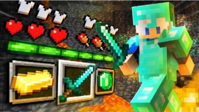
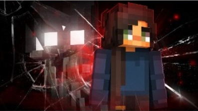
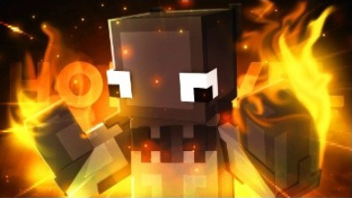
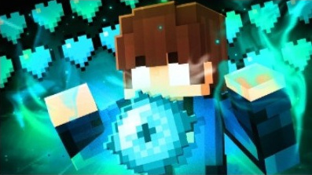
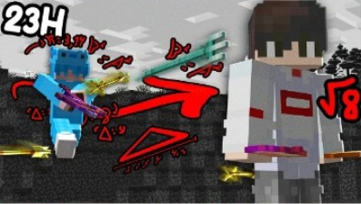
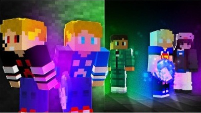
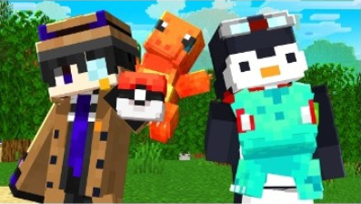
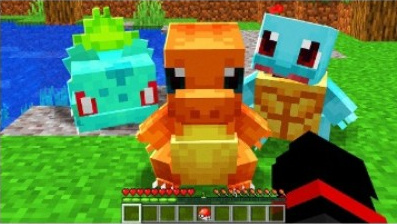
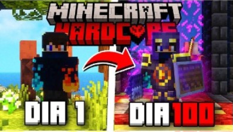
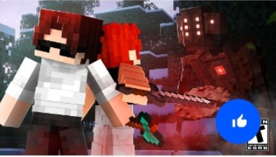
CURTIU ALGUM DESSES TRABALHOS?